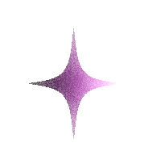
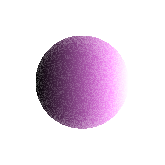

มาร่วมเปิดโลกโหราศาสตร์และทำความเข้าใจตัวตนที่แท้จริงผ่านลัคนาราศีและ AI ไปพร้อมๆ กันเถอะ
This question sparked the creation of LUCKKANA, a Thesis Project dedicated to decoding that mystery.
Why we created this : We believe that Self-discovery through the stars is not just superstition, but a study of cosmic statistics.
Our goal was to bridge the gap between traditional fortune-telling and modern accessibility.
We built this AI Chatbot not just to predict the future, but to calculate the 'Ascendant' (Rising Sign) with mathematical precision, moving beyond generic horoscopes.
Our mission is to create a 'Digital Companion' that offers guidance based on the rigorous astrological data we have researched and compiled throughout this academic year.